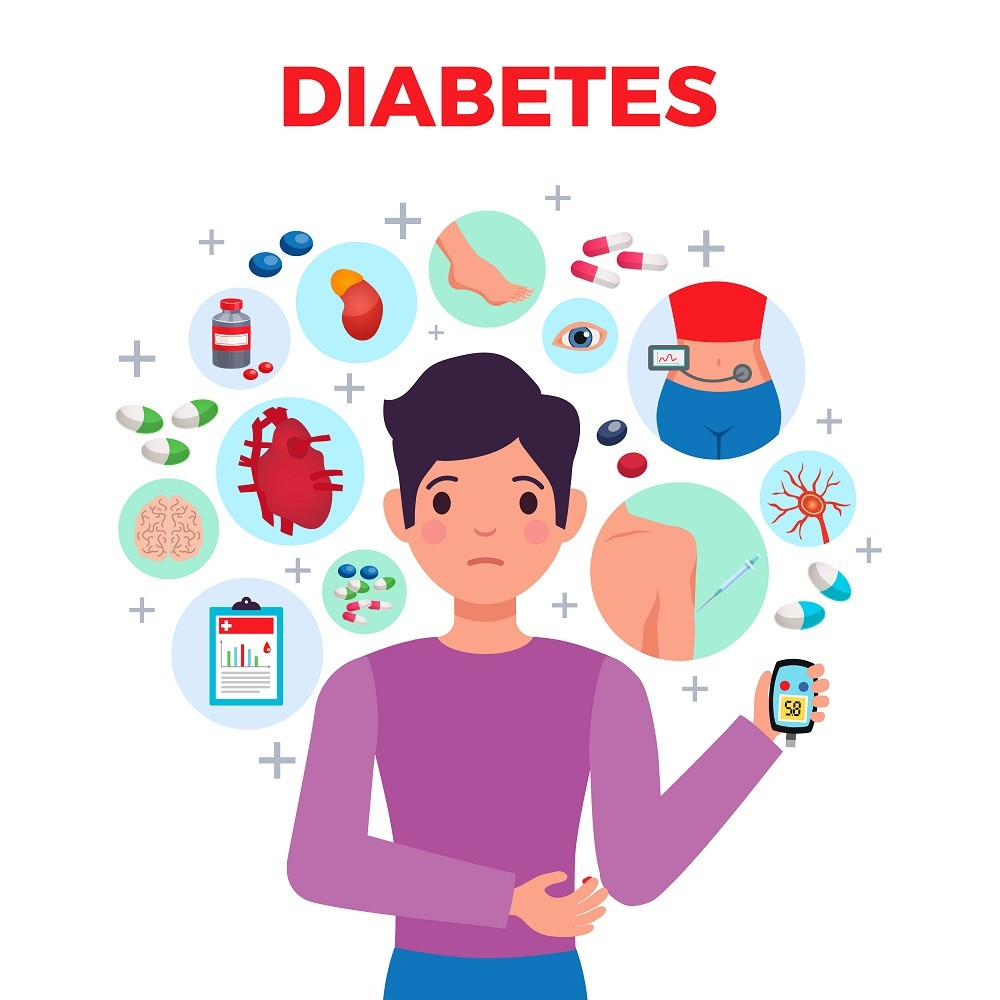

IMC
El índice de masa corporal, o por sus siglas IMC, es un como se dice, un índice con el cual se estima la grasa corporal de una persona y así determinar si tiene sobrepeso o delgadez. Fue ideado por el estadístico Adolfe Quetelet. Es la razón del peso, o más bien masa, en kilogramos, entre la altura, siempre en metros al cuadrado. Cabe aclarar que este índice no hace diferencia entre la masa corporal y la muscular, por lo tanto, sencillamente con el índice no se puede diferenciar a una persona sana de una con obesidad o delgadez. También no se pueden aplicar los mismos valores en niños y adolescentes, para ello se usan percentiles donde se compara el peso de uno con sus iguales.
OMS
La Organización Mundial de la Salud es un organismo internacional perteneciente a la Organización de las Naciones Unidas fundada el 7 de abril de 1948. Se dedica a la gestión, promoción y aplicación de políticas de salud y prevención de enfermedades en el mundo entero.
Malnutrición
Es el estado resultante de una diete desequilibrada, cuando al cuerpo le faltan nutrientes esenciales para funcionar. No implica desnutrición pues la malnutrición puede ser causada por un exceso de nutrición.Obesidad
Es una enfermedad crónica caracterizada por el exceso de grasa corporal. Es producida por el consumo desmedido de grasas, azúcares y carbohidratos. Otra causa es la poca o nula actividad física en el cuerpo.Enfermedad Cardiovascular
Afección cardíaca que se manifiesta mediante vasos sanguíneos enfermos, problemas estructurales y coágulos sanguíneos.
Hiperglucemia
El azúcar alta en la sangre también es llamada glucosa alta en sangre, o hiperglicemia. El azúcar alta en la sangre casi siempre ocurre en personas que tienen diabetes. El azúcar alta en la sangre ocurre cuando: Su cuerpo produce muy poca insulina.Diabetes
Un grupo de enfermedades que tiene como resultado un exceso de azúcar en la sangre (glucosa sanguínea elevada).

SAHS (Apnea del sueño)
Trastorno del sueño potencialmente grave en el que la respiración se detiene y vuelve a comenzar repetidamente.